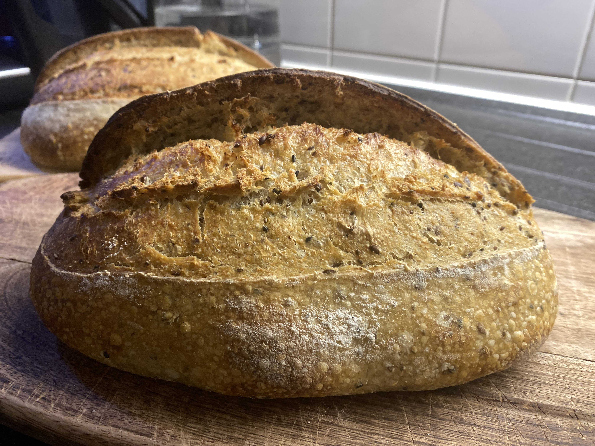
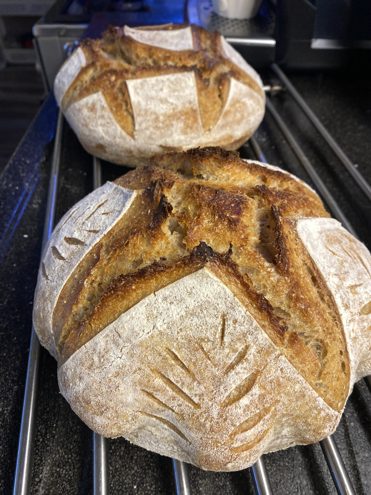
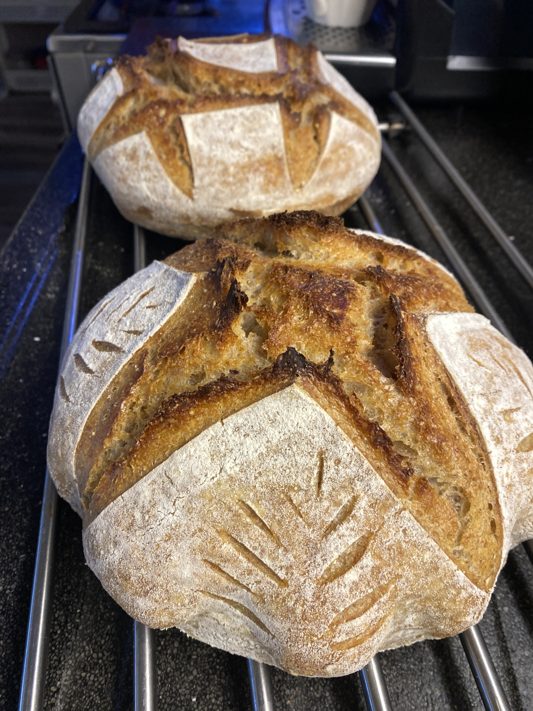

Do you like Sourdough bread?
There is nothing like a warm, and a fresh Sourdough bread at home,
the smell of it just makes you feel like
you are in those cartoons where everything is perfect.

Here are some more pictures of my sourdough bread:
 

Enjoying my bread in this cold weather
So what is Sourdough bread?
So now that you know what sourdough bread is, you can try making it at home.
Here is a simple recipe to get you started:
This one is my recipe, we will start on how to make sourdough starter first.
Sourdough Starter Recipe
Ingredients:
- 1 cup whole wheat flour
- 1 cup water (filtered or dechlorinated)
Instructions:
- In a large bowl, mix the whole wheat flour and water until well combined.
- Cover the bowl with a clean cloth and let it sit at room temperature for 24 hours.
- After 24 hours, you should see some bubbles forming. This indicates that fermentation has started.
- Discard half of the starter and feed it with 1/2 cup of all-purpose flour and 1/2 cup of water. Mix well.
- Repeat this feeding process every 24 hours for about 5-7 days, until the starter is bubbly and has a pleasant sour smell.
Your sourdough starter is now ready to use for baking delicious bread!
Click here to see how to make sourdough starter part 1
Click here for part 2
Click here for final part 3